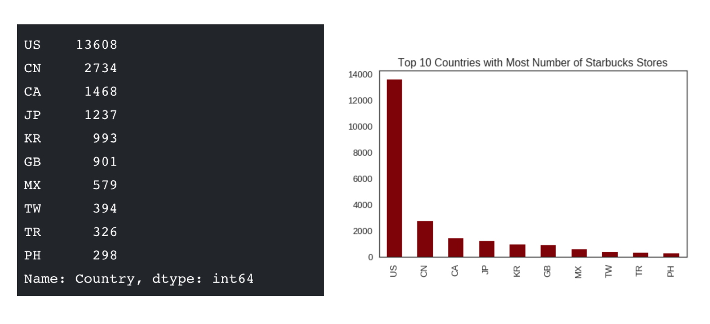
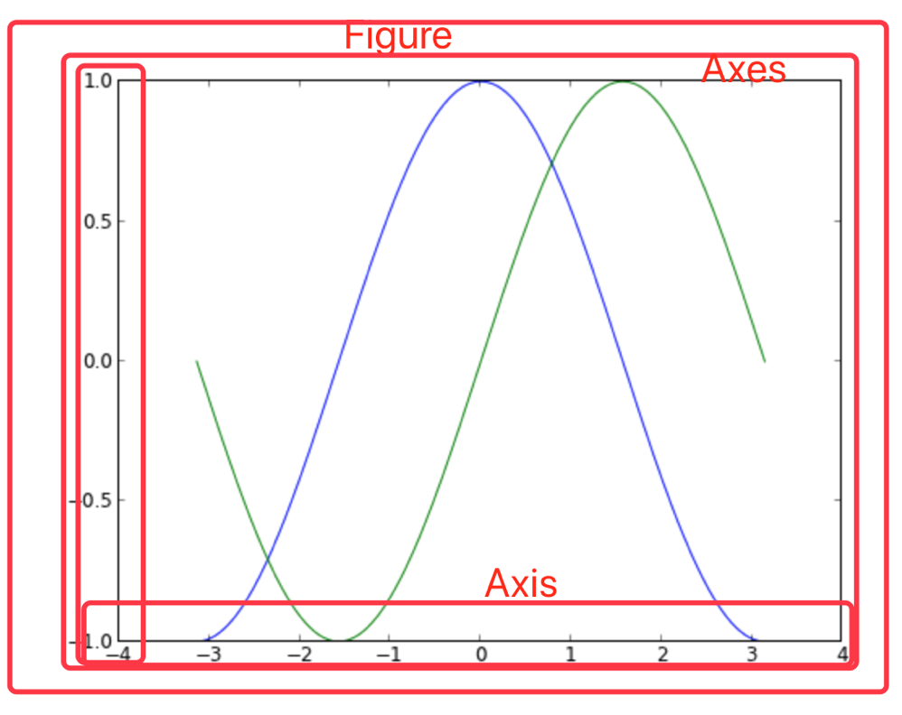

3.1 Matplotlib之HelloWorld
学习目标
- 目标
- 快速掌握Matplotlib画图
- 应用
- 无
3.1.1 什么是Matplotlib
- 是专门用于开发2D图表(包括3D图表)
- 使用起来及其简单
- 以渐进、交互式方式实现数据可视化
3.1.2 为什么要学习Matplotlib
可视化是在整个数据挖掘的关键辅助工具，可以清晰的理解数据，从而调整我们的分析方法。
- 能将数据进行可视化,更直观的呈现
- 使数据更加客观、更具说服力
例如下面两个图为数字展示和图形展示：

3.1.3 实现一个简单的Matplotlib画图
import matplotlib.pyplot as plt
# 1.创建画布
plt.figure(figsize=(20,8), dpi=100)
# 2.绘制图像
x = [1,2,3]
y = [4,5,6]
plt.plot(x, y)
# 3.显示图像
plt.show()

3.1.4 认识Matplotlib图像结构(拓展，了解)

3.1.5 Matplotlib三层结构(拓展，了解)
1 容器层
容器层主要由Canvas、Figure、Axes组成。
Canvas是位于最底层的系统层，在绘图的过程中充当画板的角色，即放置画布(Figure)的工具。
Figure是Canvas上方的第一层，也是需要用户来操作的应用层的第一层，在绘图的过程中充当画布的角色。
Axes是应用层的第二层，在绘图的过程中相当于画布上的绘图区的角色。
- Figure:指整个图形(可以通过plt.figure()设置画布的大小和分辨率等)
- Axes(坐标系):数据的绘图区域
- Axis(坐标轴)：坐标系中的一条轴，包含大小限制、刻度和刻度标签
特点为：
- 一个figure(图像)可以包含多个axes(坐标系/绘图区)，但是一个axes只能属于一个figure。
- 一个axes(坐标系/绘图区)可以包含多个axis(坐标轴)，包含两个即为2d坐标系，3个即为3d坐标系 
2 辅助显示层
辅助显示层为Axes(绘图区)内的除了根据数据绘制出的图像以外的内容，主要包括Axes外观(facecolor)、边框线(spines)、坐标轴(axis)、坐标轴名称(axis label)、坐标轴刻度(tick)、坐标轴刻度标签(tick label)、网格线(grid)、图例(legend)、标题(title)等内容。
该层的设置可使图像显示更加直观更加容易被用户理解，但又不会对图像产生实质的影响。
3 图像层
图像层指Axes内通过plot、scatter、bar、histogram、pie等函数根据数据绘制出的图像。

- 总结：
- Canvas（画板）位于最底层，用户一般接触不到
- Figure（画布）建立在Canvas之上
- Axes（绘图区）建立在Figure之上
- 坐标轴（axis）、图例（legend）等辅助显示层以及图像层都是建立在Axes之上